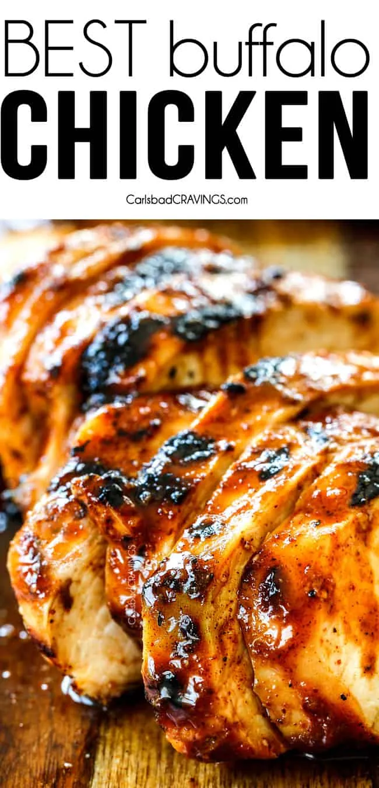

BUFFALO CHICKEN

Slow cooker Buffalo Chicken Sandwiches
INGREDIENTS: Serves 6 Sandwiches
- 4 skinless, boneless chicken breast halves
- 1 (17.5 fluid ounce) bottle Buffalo wing sauce, divided
- ½ (1 ounce) package dry ranch salad dressing mix
- 2 tablespoons butter
- 6 hoagie rolls, split lengthwise
step 1:
Place chicken breasts into the slow cooker; pour in 3/4 of the wing sauce and ranch dressing mix. step 2:
Cover and cook on Low for 6 to 7 hours.step 3:
Shred chicken in the cooker with two forks. Stir in butter. step 4:
Pile shredded chicken and sauce onto hoagie rolls. Serve with remaining Buffalo sauce.